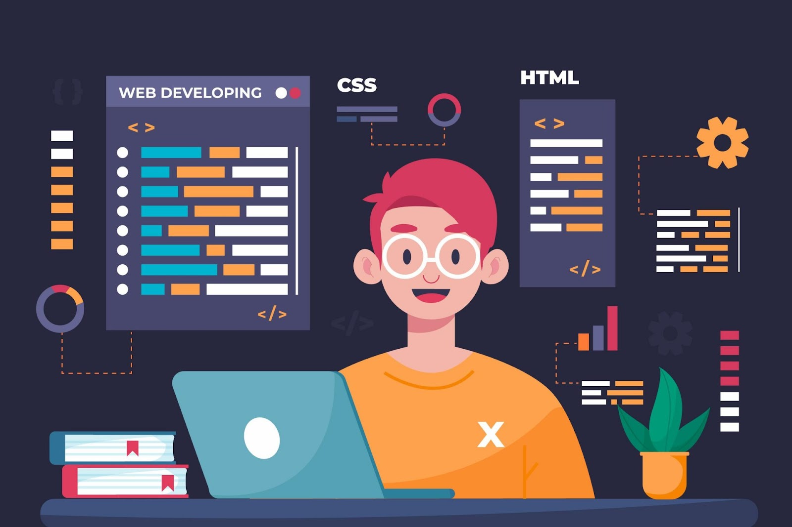

En Yokohama School, nos enorgullecemos de ser una institución de vanguardia dedicada a preparar a la próxima generación de innovadores y pensadores del mundo de la programación. Con un campus situado en el corazón del Silicon Valley tecnológico, ofrecemos un ambiente estimulante lleno de oportunidades para aprender, crecer y conectar.

Nuestros Servicios:
- Cursos Personalizados: Desde fundamentos de programación para principiantes hasta cursos avanzados en inteligencia artificial y machine learning, nuestros programas están diseñados para adaptarse a todos los niveles de habilidad.
- Bootcamps Intensivos: Sumérgete en el desarrollo web, el análisis de datos o la seguridad cibernética con nuestros bootcamps de inmersión total. En solo 12 semanas, pasarás de ser un aficionado a un profesional.
- Desarrollo de Carrera: Nuestro compromiso con tu éxito no termina en el aula. Ofrecemos asesoramiento profesional y servicios de colocación laboral para asegurarnos de que des el siguiente paso con confianza.
- Laboratorios de Tecnología de Punta: Accede a nuestros laboratorios equipados con la última tecnología para que puedas experimentar y trabajar en proyectos del mundo real.
- Comunidad Colaborativa: Únete a una red de mentores, alumnos y profesionales de la industria que apoyan tu aprendizaje y crecimiento a través de eventos de networking, hackatones y colaboraciones en proyectos.
- E-Learning Flexible: Para aquellos que necesitan flexibilidad, ofrecemos una serie de cursos en línea que puedes tomar a tu propio ritmo, con el apoyo de tutores dedicados.
- Certificaciones Profesionales: Certifícate en diferentes lenguajes y tecnologías de programación para mejorar tu CV y demostrar tus habilidades a los empleadores.
En Yokohama School, no solo te enseñamos a codificar, te preparamos para ser un líder en la tecnología del mañana. ¡Únete a nosotros y comienza a construir tu futuro hoy!